Portfolio Projects
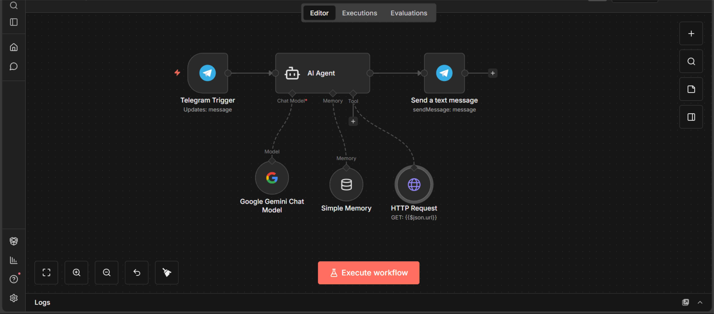
SubAndGain Customer Service Assistance (built and deployed to production)
View Project →Learn More
SubAndGain Telecommunication is a Telecommunication company under SubAndGain Ltd (RC 8865814) that deals with subscription of Data, Cable Tv, Electricity, Airtime VTU And Education bills. This AI agent uses telegram as an interface for chat and communication. it is a customer service agent that helps customers pay for services and resolve issues concerning their bills, subscriptions and education registrations. this has helped the business reach and meet the needs of numerous customers at a large scale via telegram where customers dont have to browse the web or call their customer care number before they resolve issues.
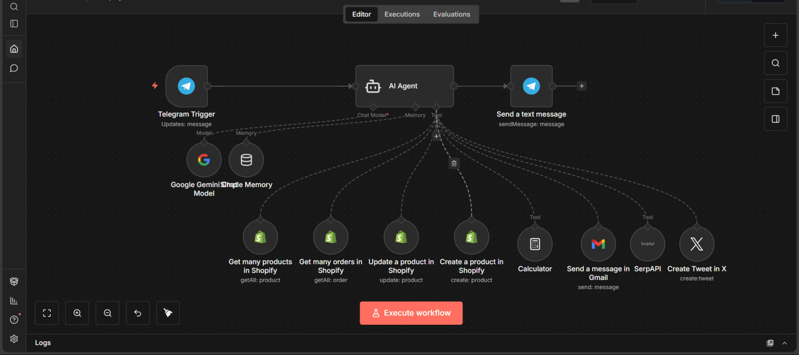
Business Manager Agent (built and deployed to production)
View Project →Learn More
This is a project for an AI company that sells AI Education products on Shopify. This agent has proven to be efficient for the business in cutting down the time they spend in keeping track of products, adds performance and also managing their social media content. The Agent manages the store product, create new products and keeps track of the sales orders and delivery to the store, track adds, search the internet for lastest trends, write and manage social media account (Twitter), send bulk email to update customers on new products and trends.

Lead qualifier
View Project →Learn More
AI lead indicator is an Agent that helps businesses find the best from call transcript when dealing with large number of clients. the agent pick up transcript from calls and text messages receive by customer services agent, tracks the conversation, the person's names and decide if it is a good lead for the business or not. if the the is a good one it is forwarded to humans in for further enquiry and possible delivery. this is done so that the business wont miss out on top opportunities to sell their product to potential big buyers.
Student data analystics
View Project →Learn More
This is an automation that clean, standardize data types and analyse student data, create visualizations, prepare report and send to stake holders via Gmail for record keeping.
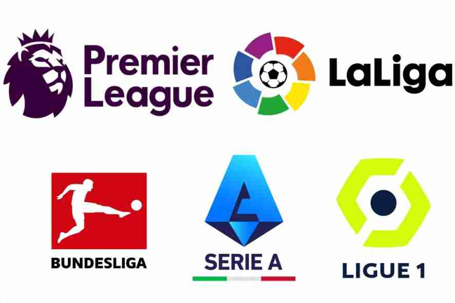
European Football Analysis Using ESPN Live Data
View Project →Learn More
In this project, I analyze football data using Python. I perform bivariate and multivariate analysis on data from 2024 to 2026 across the top five European leagues. The analysis covers team statistics, league standings, leagues, and fixtures, with the goal of uncovering patterns and trends across these leagues.
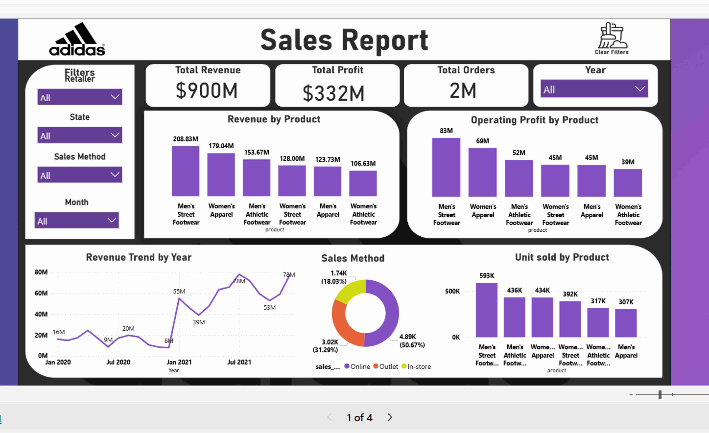
Adidas Sales Report
View Project →Learn More
In this project I focus on analysing key metrics that contribute to the growth of the Adidas brand from product, Retailers, Regions and state. To Understand the key players of revenues and profit drivers across different metrics for decision making.

Sales Analysis and report
View Project →Learn More
Developed a comprehensive sales analytics dashboard analyzing revenue distribution, customer performance, and regional profitability across US states using Python for data processing, SQL for database querying, and Power BI for interactive visualization.

Bank Risk Analysis and report
View Project →Learn More
Built an end-to-end risk assessment and portfolio analytics dashboard for banking operations using Python for statistical analysis and risk modeling, SQL for data extraction and aggregation, and Power BI for creating interactive risk visualization and monitoring tools. Key Insight: Analyzed loan portfolios across multiple risk categories, identifying high-risk segments with default probabilities exceeding industry benchmarks, enabling proactive risk mitigation strategies and portfolio rebalancing.
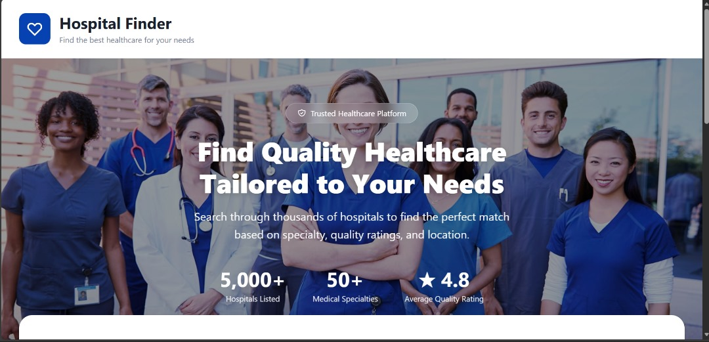
Hospital finder
View Project →Learn More
This project is built to solve a REAL problem. How do you quickly find the safest, best-rated hospital when every second counts? This is excatly why i built this project. The app uses Cosine Similarity to intelligently filter hospitals based on:
- Medical specialty
- Overall rating
- Patient-safety metrics
It also integrates Google Maps to provide smooth navigation, especially useful in emergencies or for autonomous vehicle routing. Users can easily:
- Filter hospitals by state
- Search for emergency services
- Get optimized routes to the nearest, highest-quality facility
Customer Churn Analysis
View Project →Learn More
Analyzed customer behavior for a Telco company and built predictive models to identify at-risk customers, enabling proactive retention strategies.
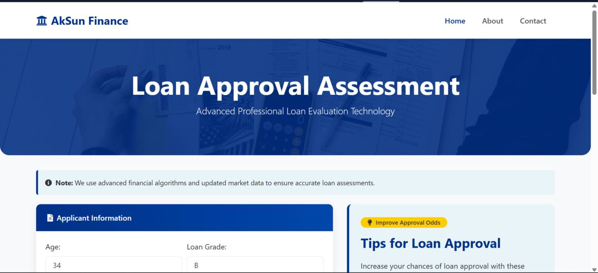
AkSun Finance
View Project →Learn More
Built an AI-powered loan assessment system for a fintech startup. Achieved 85% reduction in manual review time and 73% improvement in default prediction accuracy with real-time decision support.
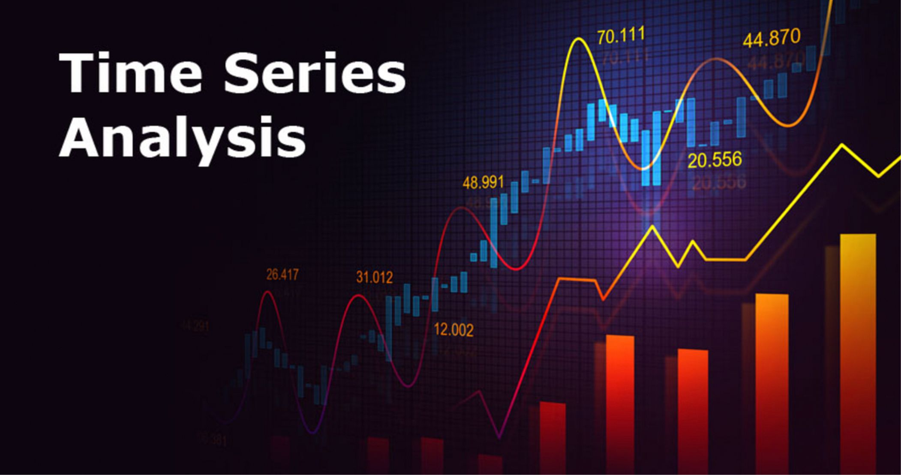
Bitcoin Price Prediction
View Project →Learn More
Forecasted Bitcoin prices using Facebook Prophet, analyzing seasonality and market trends to draw actionable insights.
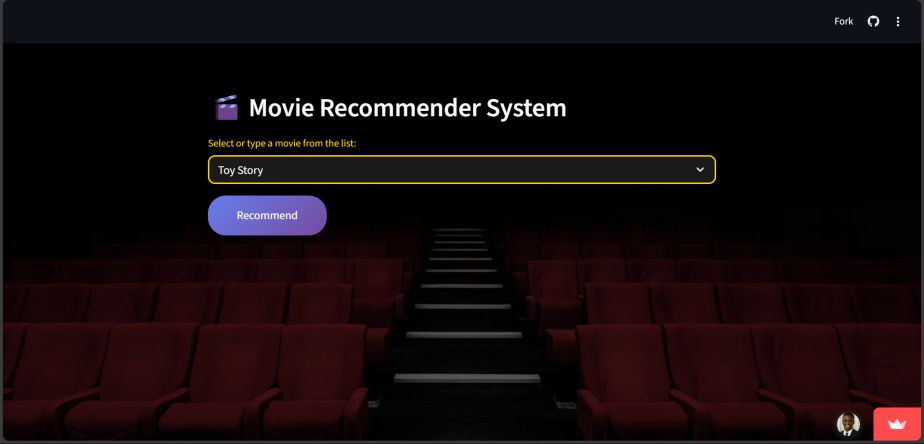
Movie Recommender System
View Project →Learn More
Designed a content-based recommendation engine using cosine similarity, improving engagement on a streaming service prototype.
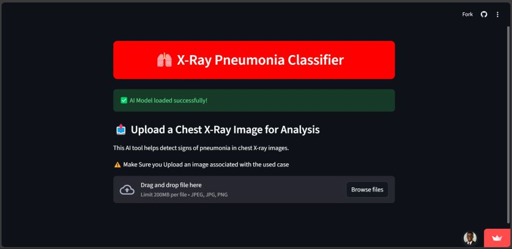
Medical X-ray Image Detector
View Project →Learn More
Built a deep learning model for pneumonia detection from chest X-rays, enhancing diagnostic accuracy and accessibility in underserved regions.
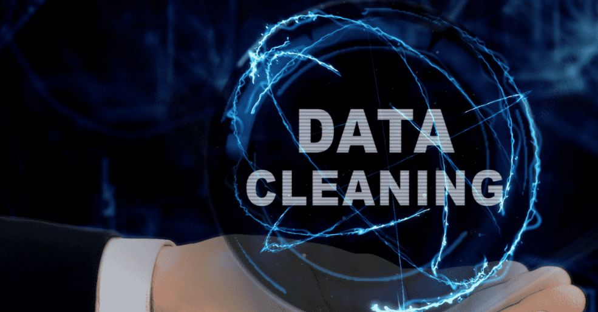
Data Cleaning Automation
View Project →Learn More
Developed a data cleaning tool to handle missing values, remove duplicates, and validate data integrity—preparing datasets for high-quality analysis.
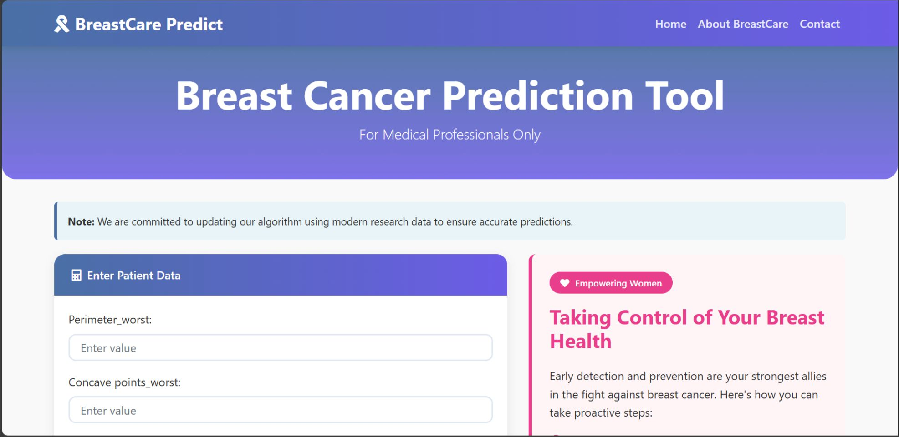
BreastCare
View Project →Learn More
This app assists oncologists by offering AI-driven diagnostics for early breast cancer detection. It streamlines the diagnostic process, reduces uncertainty, and helps professionals focus on patient care.